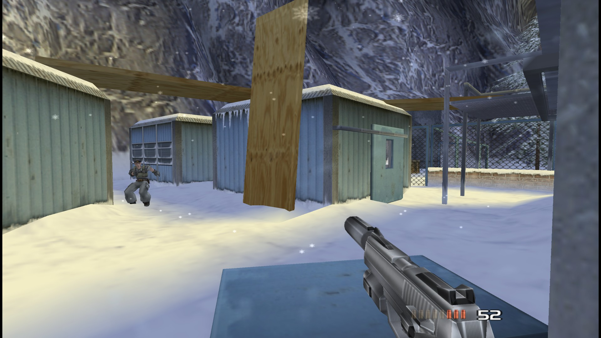
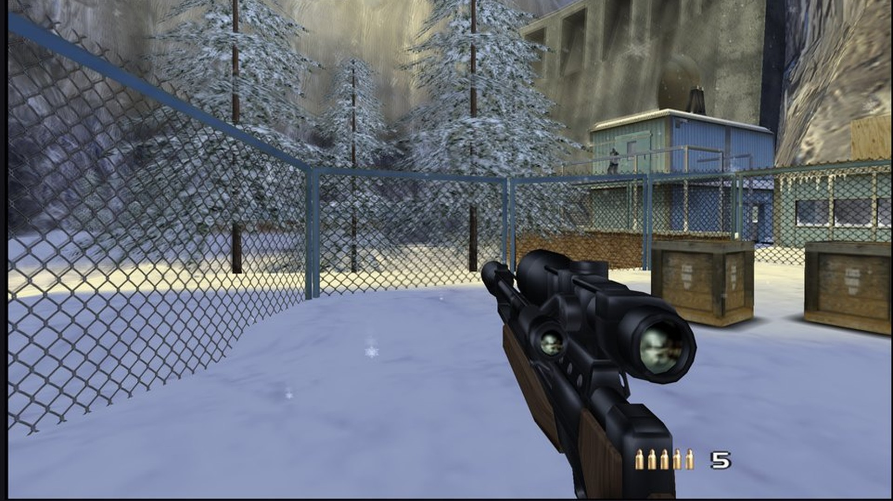
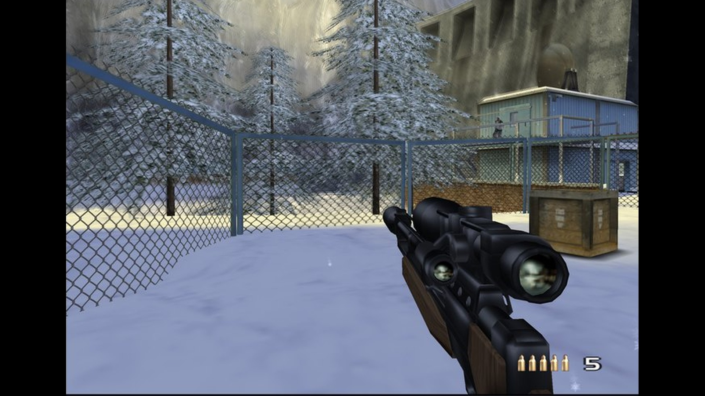
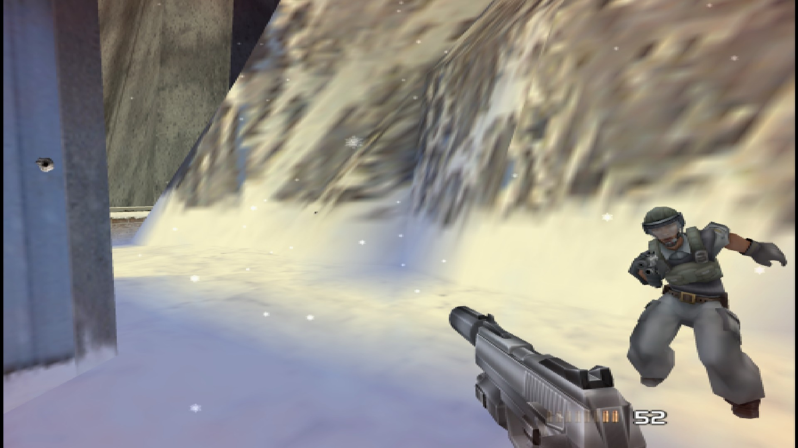

Resolution: PS2 (512×448) vs 4× internal
Siberia, the camp. The left side is the same frame box-filtered down to the PS2 output size of 512×448 and shown pixel-for-pixel; the right side is what the port renders by default ("Remaster" preset).

⇔
PS2 resolutionthis port · 4×
Picture: original 4:3 vs real 16:9 (Hor+)
Same frame of the same replay. 16:9 shows more of the scene instead of stretching; HUD and menus stay in proportion.


⇔
4:3 originalthis port · 16:9
Second scene
A firefight a few seconds later in the same replay.

⇔
PS2 resolutionthis port · 4×